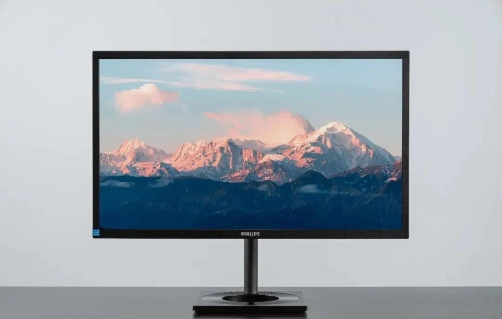

飞利浦 27E1N5900

飞利浦 27 英寸 4K 商务显示器，IPS 面板覆盖 100% sRGB 并出厂校色，画面细腻色彩准确。Type-C 65W 单线连接笔记本，人体工学支架支持多向调节，低蓝光不闪屏护眼技术齐全，价格在 4K 商务屏中十分亲民，适合办公与家用。
客观评测
27E1N5900 是飞利浦面向商务与家庭用户的 4K 显示器，27 英寸 IPS 覆盖 100% sRGB（约），画面细腻满足文档、表格与修图需求。接口诚意较好：Type-C 支持 65W PD 与视频传输，另有双 HDMI、DP 与多个 USB 下行，可充当简易扩展坞。支架支持升降、俯仰、侧转与旋转。350 尼特亮度（约）与 HDR10 属入门水平，护眼有低蓝光与不闪屏。规格务实，价格有竞争力。
主观点评
我给家里和工位都推荐过它：4K 显示文字清晰锐利，一根 Type-C 连笔记本就能传画面加充电，桌面清爽不少。支架手感厚实，横竖屏切换很顺。它的性格就是「务实」——没有炫技的参数，HDR 和游戏也就及格水平，但办公场景里该有的都有。预算两千内想要 4K 加全功能支架，它是我优先考虑的选项。
优点与不足
- 2000 元内 4K 加 Type-C 65W，性价比突出
- 全功能人体工学支架，久坐调节方便
- 护眼技术齐全，适合长时间办公
- 60Hz 刷新率与一般响应，游戏表现平平
- HDR 亮度有限，仅名义支持
- 内置音箱缺席，需外接音频设备
参数规格
| 尺寸 | 27 英寸（16:9） |
|---|---|
| 面板 | IPS |
| 分辨率 | 3840×2160（4K UHD） |
| 刷新率 | 60Hz |
| 响应时间 | 4ms GTG（约） |
| 色域 | 100% sRGB（约） |
| 亮度 | 典型 350 尼特（约） |
| HDR | HDR10（约） |
| 对比度 | 1000:1（典型） |
| 接口 | Type-C 65W PD、HDMI 2.0×2、DP 1.2、USB 3.2 下行×4（约） |
| 支架 | 升降、俯仰、侧转、旋转，支持壁挂 100×100mm |
| 护眼 | 低蓝光模式、不闪屏、EasyRead 模式 |
| 其他 | SmartImage 预设模式、内置电源（约） |